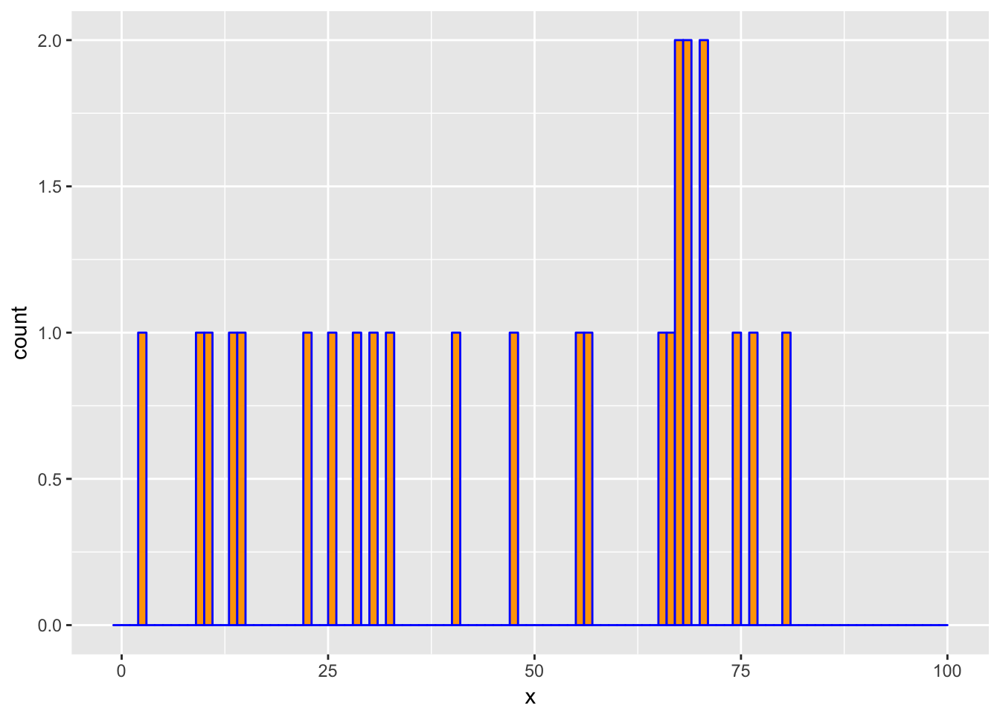

Log-Concave Distribution Estimation
Introduction
Let \(n = 1\) and suppose \(x_i\) are i.i.d. samples from a log-concave discrete distribution on \(\{0,\ldots,K\}\) for some \(K \in {\mathbf Z}_+\). Define \(p_k := {\mathbf {Prob}}(X = k)\) to be the probability mass function. One method for estimating \(\{p_0,\ldots,p_K\}\) is to maximize the log-likelihood function subject to a log-concavity constraint , i.e.,
\[ \begin{array}{ll} \underset{p}{\mbox{maximize}} & \sum_{k=0}^K M_k\log p_k \\ \mbox{subject to} & p \geq 0, \quad \sum_{k=0}^K p_k = 1, \\ & p_k \geq \sqrt{p_{k-1}p_{k+1}}, \quad k = 1,\ldots,K-1, \end{array} \]
where \(p \in {\mathbf R}^{K+1}\) is our variable of interest and \(M_k\) represents the number of observations equal to \(k\), so that \(\sum_{k=0}^K M_k = m\). The problem as posed above is not convex. However, we can transform it into a convex optimization problem by defining new variables \(u_k = \log p_k\) and relaxing the equality constraint to \(\sum_{k=0}^K p_k \leq 1\), since the latter always holds tightly at an optimal solution. The result is
\[ \begin{array}{ll} \underset{u}{\mbox{maximize}} & \sum_{k=0}^K M_k u_k \\ \mbox{subject to} & \sum_{k=0}^K e^{u_k} \leq 1, \\ & u_k - u_{k-1} \geq u_{k+1} - u_k, \quad k = 1,\ldots,K-1. \end{array} \]
Example
We draw \(m = 25\) observations from a log-concave distribution on \(\{0,\ldots,100\}\). We then estimate the probability mass function using the above method and compare it with the empirical distribution.
suppressMessages(suppressWarnings(library(CVXR)))
set.seed(1)
## Calculate a piecewise linear function
pwl_fun <- function(x, knots) {
n <- nrow(knots)
x0 <- sort(knots$x, decreasing = FALSE)
y0 <- knots$y[order(knots$x, decreasing = FALSE)]
slope <- diff(y0)/diff(x0)
sapply(x, function(xs) {
if(xs <= x0[1])
y0[1] + slope[1]*(xs -x0[1])
else if(xs >= x0[n])
y0[n] + slope[n-1]*(xs - x0[n])
else {
idx <- which(xs <= x0)[1]
y0[idx-1] + slope[idx-1]*(xs - x0[idx-1])
}
})
}
## Problem data
m <- 25
xrange <- 0:100
knots <- data.frame(x = c(0, 25, 65, 100), y = c(10, 30, 40, 15))
xprobs <- pwl_fun(xrange, knots)/15
xprobs <- exp(xprobs)/sum(exp(xprobs))
x <- sample(xrange, size = m, replace = TRUE, prob = xprobs)
K <- max(xrange)
counts <- hist(x, breaks = -1:K, right = TRUE, include.lowest = FALSE,
plot = FALSE)$countslibrary(ggplot2)
ggplot() +
geom_histogram(mapping = aes(x = x), breaks = -1:K, color = "blue", fill = "orange")
We now solve problem with log-concave constraint.
u <- Variable(K+1)
obj <- t(counts) %*% u
constraints <- list(sum(exp(u)) <= 1, diff(u[1:K]) >= diff(u[2:(K+1)]))
prob <- Problem(Maximize(obj), constraints)
result <- solve(prob)
pmf <- result$getValue(exp(u))The above lines transform the variables \(u_k\) to \(e^{u_k}\) before
calculating their resulting values. This is possible because exp is
a member of the CVXR library of atoms, so it can operate directly on
a Variable object such as u.
Below are the comparison plots of pmf and cdf.
library(ggplot2)
library(tidyr)
dens <- density(x, bw = "sj")
d <- data.frame(x = xrange, True = xprobs, Optimal = pmf,
Empirical = approx(x = dens$x, y = dens$y, xout = xrange)$y)
plot.data <- gather(data = d, key = "Type", value = "Estimate", True, Empirical, Optimal,
factor_key = TRUE)
ggplot(plot.data) +
geom_line(mapping = aes(x = x, y = Estimate, color = Type)) +
theme(legend.position = "top")
d <- data.frame(x = xrange, True = cumsum(xprobs),
Empirical = cumsum(counts) / sum(counts),
Optimal = cumsum(pmf))
plot.data <- gather(data = d, key = "Type", value = "Estimate", True, Empirical, Optimal,
factor_key = TRUE)
ggplot(plot.data) +
geom_line(mapping = aes(x = x, y = Estimate, color = Type)) +
theme(legend.position = "top")
From the figures we see that the estimated curve is much closer to the true distribution, exhibiting a similar shape and number of peaks. In contrast, the empirical probability mass function oscillates, failing to be log-concave on parts of its domain. These differences are reflected in the cumulative distribution functions as well.
Session Info
sessionInfo()## R version 3.4.3 (2017-11-30)
## Platform: x86_64-apple-darwin15.6.0 (64-bit)
## Running under: macOS High Sierra 10.13.3
##
## Matrix products: default
## BLAS: /Library/Frameworks/R.framework/Versions/3.4/Resources/lib/libRblas.0.dylib
## LAPACK: /Library/Frameworks/R.framework/Versions/3.4/Resources/lib/libRlapack.dylib
##
## locale:
## [1] en_US.UTF-8/en_US.UTF-8/en_US.UTF-8/C/en_US.UTF-8/en_US.UTF-8
##
## attached base packages:
## [1] methods stats graphics grDevices datasets utils base
##
## other attached packages:
## [1] tidyr_0.8.0 ggplot2_2.2.1 CVXR_0.95
##
## loaded via a namespace (and not attached):
## [1] gmp_0.5-13.1 Rcpp_0.12.15 pillar_1.1.0
## [4] compiler_3.4.3 plyr_1.8.4 R.methodsS3_1.7.1
## [7] R.utils_2.6.0 tools_3.4.3 digest_0.6.15
## [10] bit_1.1-12 evaluate_0.10.1 tibble_1.4.2
## [13] gtable_0.2.0 lattice_0.20-35 rlang_0.2.0
## [16] Matrix_1.2-12 yaml_2.1.16 blogdown_0.5.4
## [19] xfun_0.1 Rmpfr_0.7-0 ECOSolveR_0.4
## [22] stringr_1.3.0 knitr_1.20 tidyselect_0.2.3
## [25] rprojroot_1.3-2 bit64_0.9-7 grid_3.4.3
## [28] glue_1.2.0 R6_2.2.2 rmarkdown_1.8.10
## [31] bookdown_0.7 purrr_0.2.4 magrittr_1.5
## [34] backports_1.1.2 scales_0.5.0 htmltools_0.3.6
## [37] scs_1.1-1 colorspace_1.3-2 labeling_0.3
## [40] stringi_1.1.6 lazyeval_0.2.1 munsell_0.4.3
## [43] R.oo_1.21.0